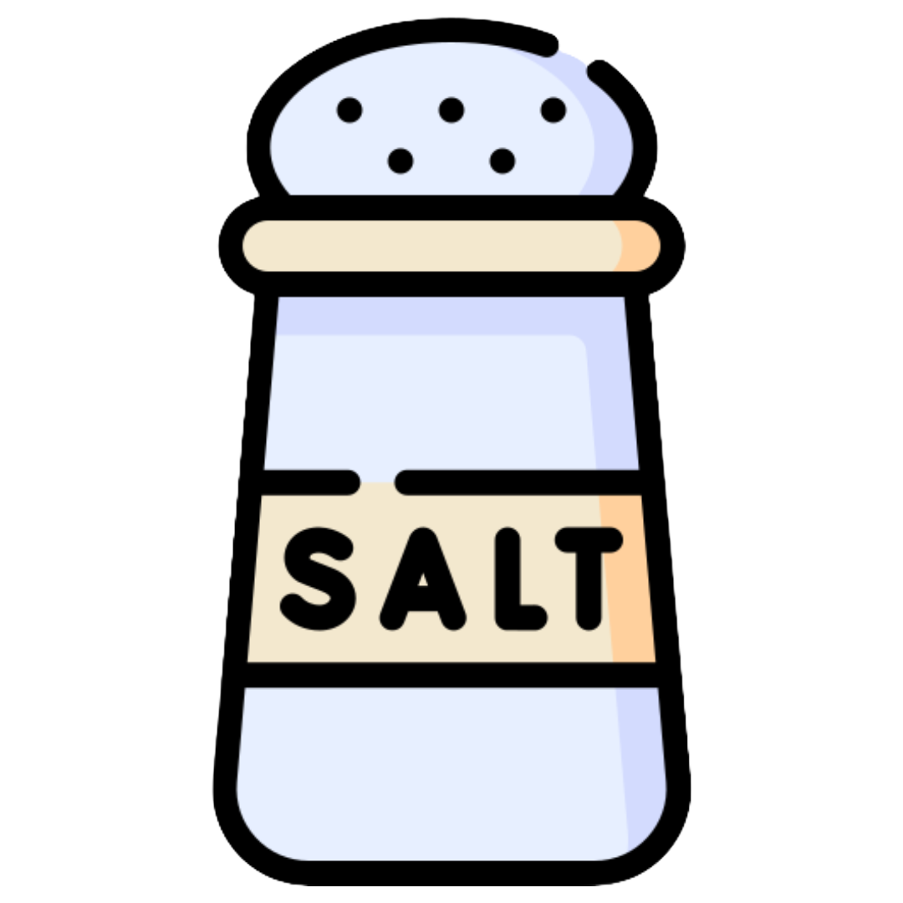

THỊT LỢN XÀO HÀNH GỪNG
Thịt lợn xào hành gừng là một món ăn phù hợp cho người đang bị tiêu hóa kém, sợ lạnh.
Tìm hiểu thêm
THỰC PHƯƠNG
Món cay
Món chua

Món mặn
Món đắng
Món ngọt

Thịt lợn xào hành gừng
Thịt lợn xào hành gừng là một món ăn phù hợp cho người đang bị tiêu hóa kém, sợ lạnh.
Tìm hiểu thêm
Thịt lợn xào hành gừng
Thịt lợn xào hành gừng là một món ăn phù hợp cho người đang bị tiêu hóa kém, sợ lạnh.
Tìm hiểu thêm